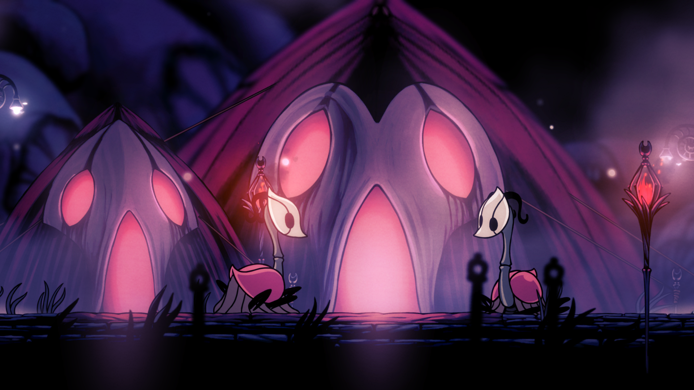
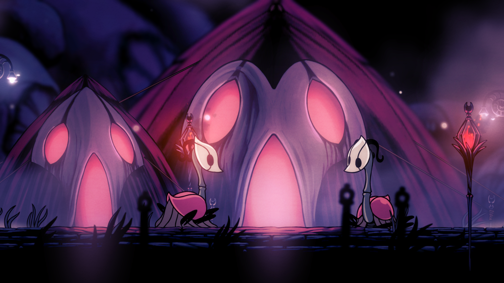

Article d'appréciation
Christopher Larkin, tout un artiste, a un style de musique que j'aime définitivement, parfois plus classique, parfois avec un but d'ambiance qui se ressent vraiment.

Source d'inspiration
Il ne cesse d'être inspirant puisqu'il garde une qualité si constante à son travail. Plus impressionnant encore, pour la suite de Hollow Knight, un réel orchestre joue ses compositions! Cet artiste a fait beaucoup d'études et cela se remarque clairement dans ce qu'il présente au monde.


 
